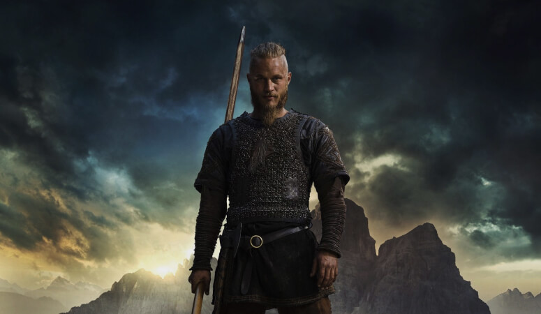
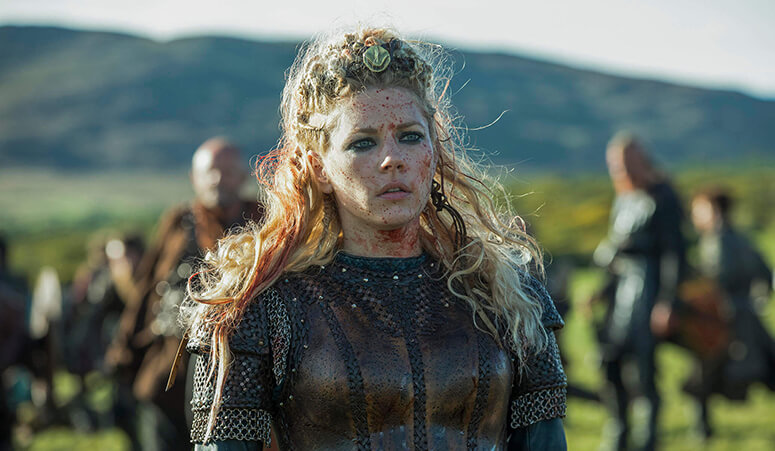
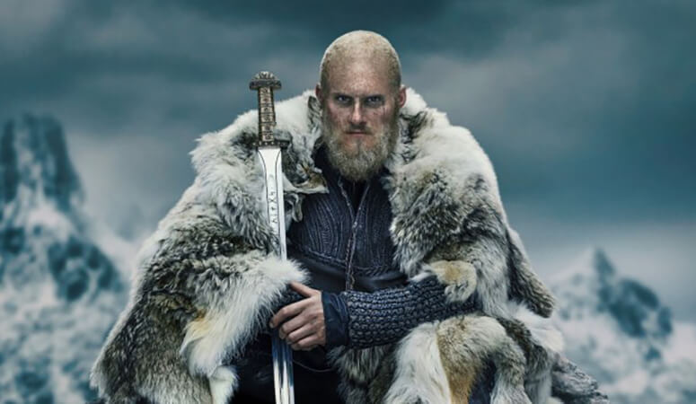
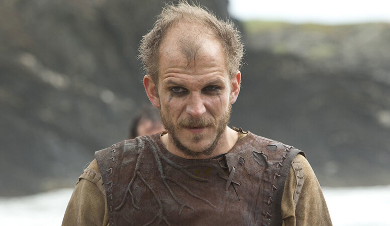
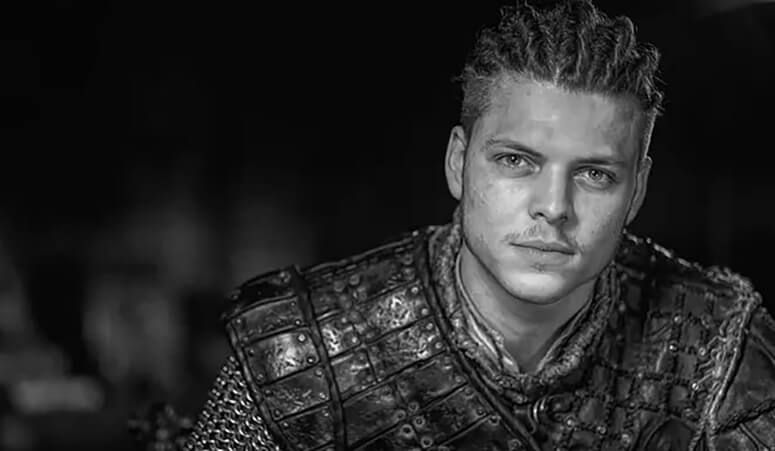

Рагнар
Рагна́р Лодбро́к (др.-сканд. Ragnarr Loðbrók) - полулегендарный скандинавский конунг из рода Инглингов, ключевой персонаж сериала.
Умелый воин и амбициозный вождь, Рагнар на протяжении почти всей своей жизни следует пути викинга. Рассекая море в поисках боевой славы и наживы, он стремится обрести новые знания, открыть неизвестные земли и изменить нелегкую судьбу своего народа, живущего в суровых условиях Скандинавского полуострова
Лагерта
Лаге́рта (или Хладге́рда, др.-сканд. Hlaðgerðr, лат. Ladgerda, Ladgertha или Lagertha; в сериале также носит псевдоним Ингстад) - известная скандинавская воительница, упомянутая в хрониках Саксона Грамматика, первая жена датского морского конунга Рагнара Лодброка. В сериале Лагерта активно участвует в походах викингов, колонизации ими новых земель и междоусобных распрях скандинавских вождей.
Эта отважная и независимая женщина способна проявлять железную решимость, когда дело касается ее личного достоинства, семьи или власти. Лагерта также известна своим милосердием и благородством.
Бьорн
Бьёрн Железнобо́кий (др.-сканд. Björn Járnsíða, швед. Björn Järnsida) - полулегендарный скандинавский конунг, основатель шведской королевской династии Мунсё. В сериале - сын Рагнара Лодброка и Лагерты, брат Гиды, единокровный брат Уббе, Хвитсерка, Сигурда и Ивара.
Сильный и решительный человек, Бьёрн намерен стать великим воином, лидером и первооткрывателем. Он полностью разделяет жажду своего отца к приключениям и поддерживает его, регулярно участвуя в грабительских набегах викингов.
Флóки
Флóки (др.-сканд. Flóki) - скандинавский кораблестроитель, активно участвующий в грабительских набегах викингов на страны Европы. Близкий друг и соратник Рагнара Лодброка. Эксцентричный и чудаковатый, он живет в уединенном доме в лесу, работая в своей мастерской на берегу моря.
Возлюбленный и муж Хельги. В их браке рождается дочь Ангрбода, но она умирает от лихорадки еще маленькой. Спустя много лет по настоянию Хельги Флоки вынужден удочерить мавританскую девочку Танарус, отношения с которой завершаются семейной трагедией.
И́вар
И́вар Беско́стный (др.-сканд. Ívarr hinn Beinlausi) - полулегендарный вождь датских викингов, известный неистовством в бою. В сериале - четвертый сын Рагнара Лодброка и Аслауг, получивший свое прозвище из-за нарушенного остеогенеза.
Самый агрессивный и неуравновешенный среди своих братьев - Уббе, Хвитсерка и Сигурда Змееглазого.
Многие годы Ивар не может ходить и передвигается либо с посторонней помощью, либо ползком. В период завоевания Англии Великой датской армией ему удается подняться на ноги, оковав их железом.